陕西 · 宜川 · 黄河之魂
壶口瀑布
黄河奔涌，千里一壶收
世界最大的黄色瀑布
陕西 · 宜川 · 黄河之魂
黄河奔涌，千里一壶收
世界最大的黄色瀑布

黄河在壶口骤然收窄，形成"千里黄河一壶收"的壮观景象
壶口瀑布，位于黄河中游秦晋大峡谷，是黄河上唯一的黄色大瀑布，也是世界最大的黄色瀑布。黄河奔流至此，两岸石壁峭立，河口收束狭如壶口，故名壶口瀑布。
黄河从300余米的宽阔河面，在不到500米的距离内骤然压缩到50余米，从20多米高的陡崖上倾注而泻，形成"千里黄河一壶收"的壮观气势。其声如万鼓齐鸣，其势如千军万马，被誉为"黄河之魂"。
我们游览的是陕西宜川侧，从这里可以正面观赏瀑布倾泻而下的磅礴气势，感受黄河母亲河最深沉的脉动。
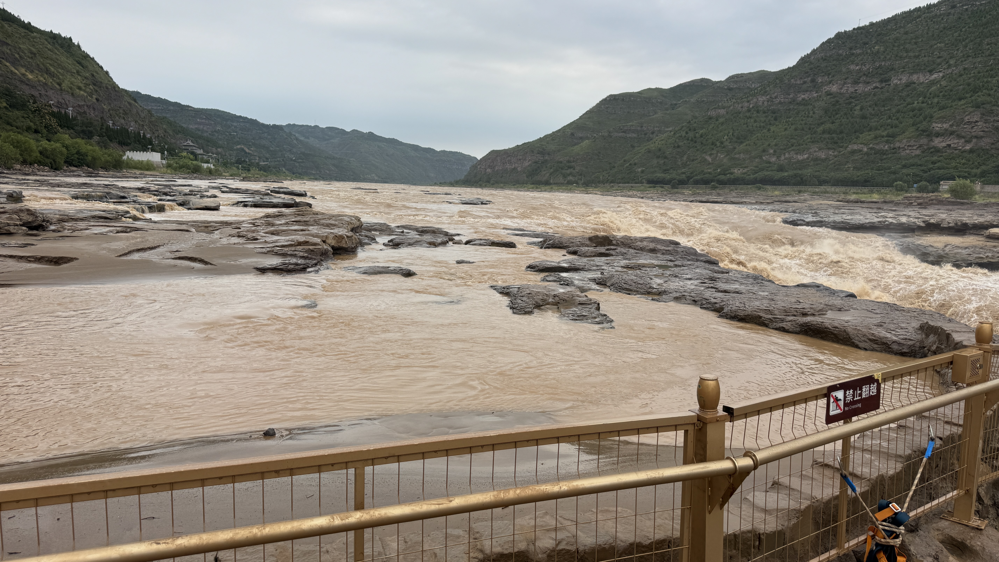
瀑布激起的水雾腾空而起，晴天时常现彩虹飞架
壶口瀑布四季景色各异，每一季都有其独特的魅力：
春季冰雪消融，桃花汛期，瀑布水量渐增，两岸山花烂漫；夏季水量充沛，瀑布最为壮观，雷霆万钧；秋季天高云淡，水质清澈，彩虹常现；冬季冰封雪冻，瀑布结为冰挂，银装素裹。
我们此行正值盛夏汛期，水量极为充沛。站在岸边，涛声贯耳、水雾扑面，真切体会到了"黄河在咆哮"的震撼——那是一种直击灵魂的自然伟力。
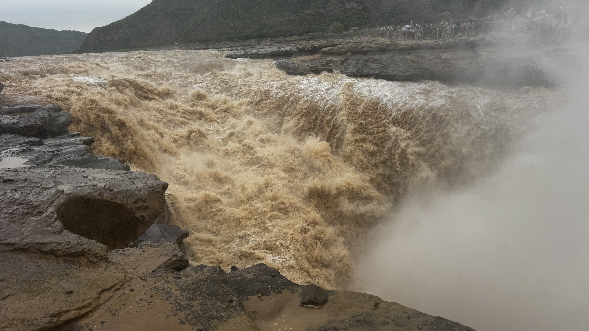
从高处俯瞰壶口，黄河如一条巨龙蜿蜒于秦晋峡谷之间
壶口瀑布所在的秦晋大峡谷，是黄河中游最壮观的一段峡谷，北起内蒙古托克托，南至陕西韩城，全长约725公里。峡谷两岸壁立千仞，黄土高原的千沟万壑在这里被黄河深切出壮丽的画卷。
站在陕西一侧，可以望见对岸的山西吉县。一条黄河，连接两省，自古便是秦晋之好的天然纽带。壶口瀑布不仅是自然奇观，更是华夏文明的地理坐标。
黄河是中华文明最主要的发源地，被称为"母亲河"。全长约5464公里，是中国第二长河，流域面积约75.2万平方公里。
1939年冼星海在延安创作《黄河大合唱》，"风在吼，马在叫，黄河在咆哮"的旋律，壶口瀑布的壮景正是其灵感源泉。
壶口瀑布是国家重点风景名胜区、国家地质公园，也是黄河国家文化公园的核心组成部分，具有极高的科学和美学价值。
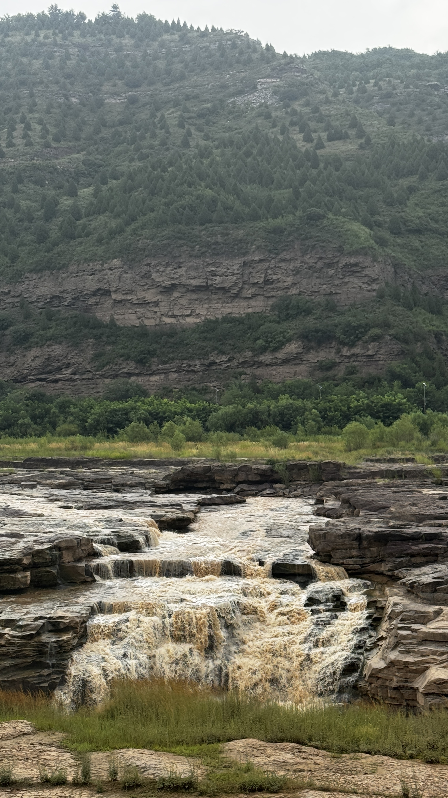
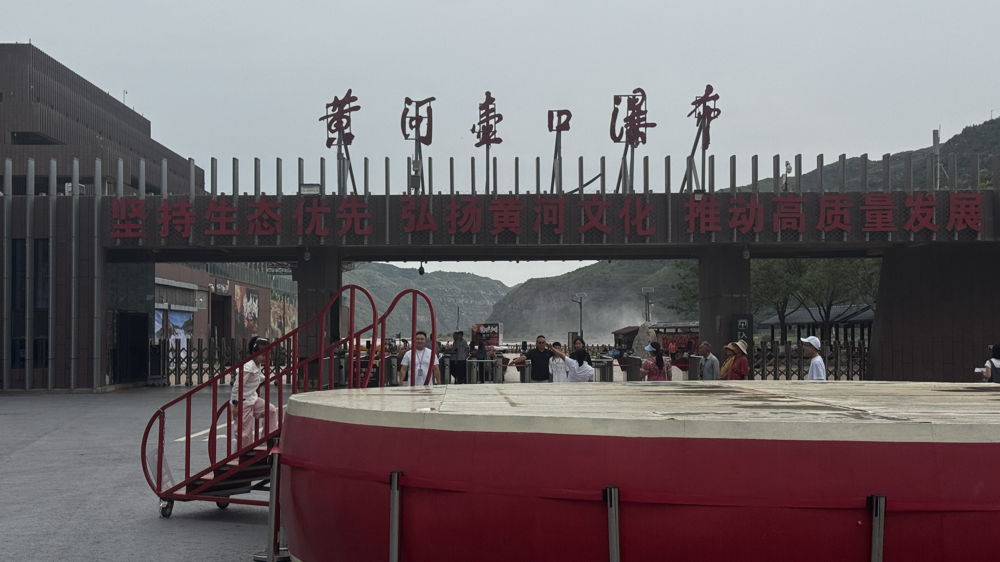
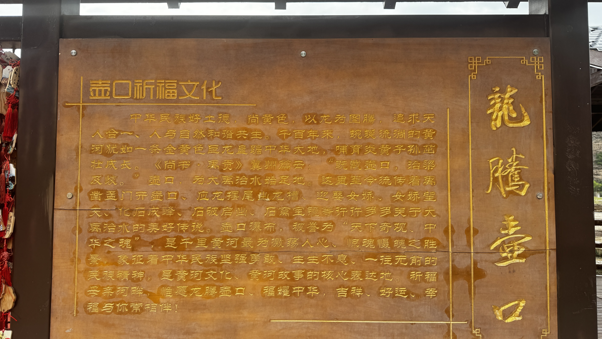
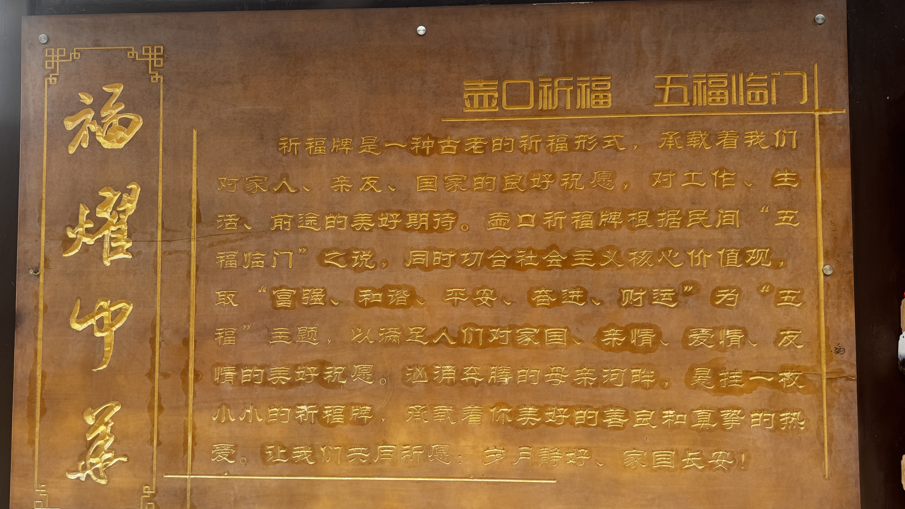
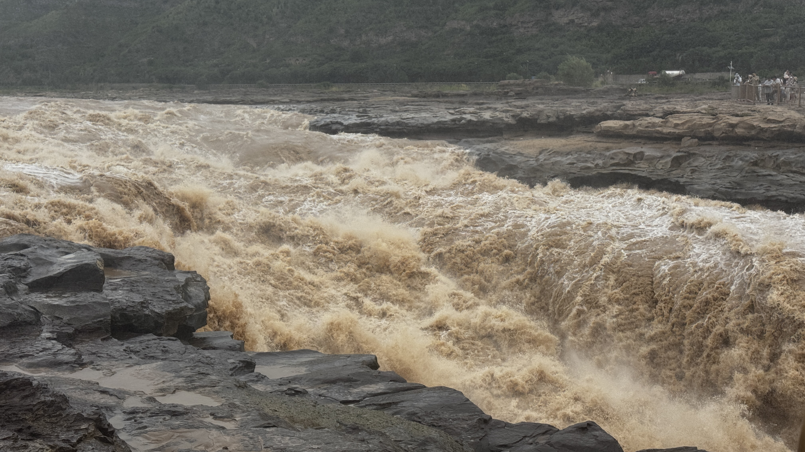
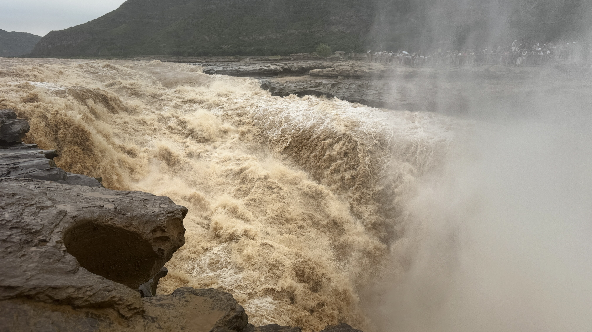
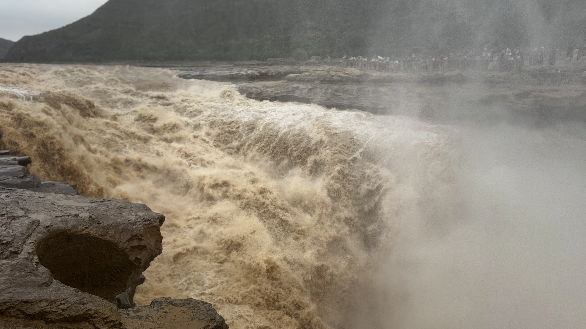
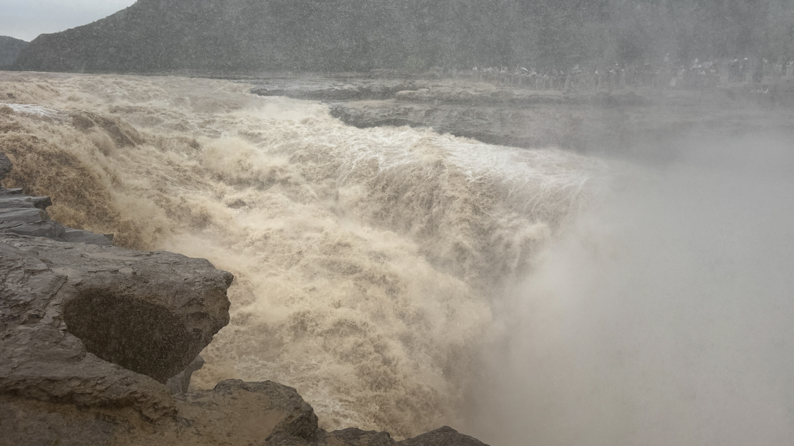
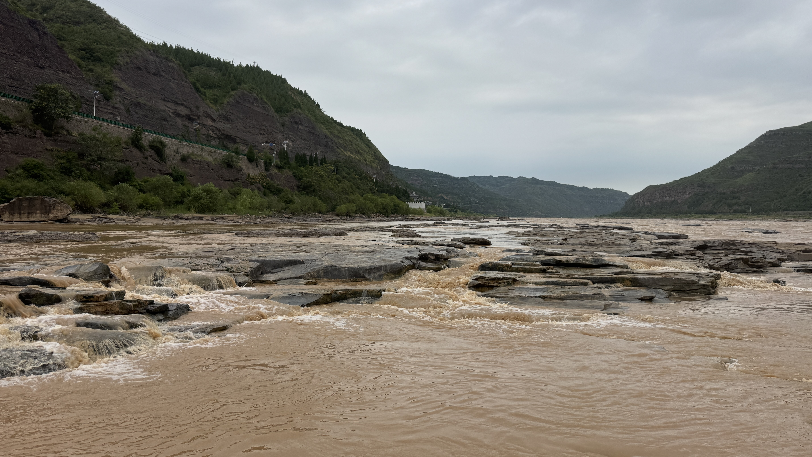